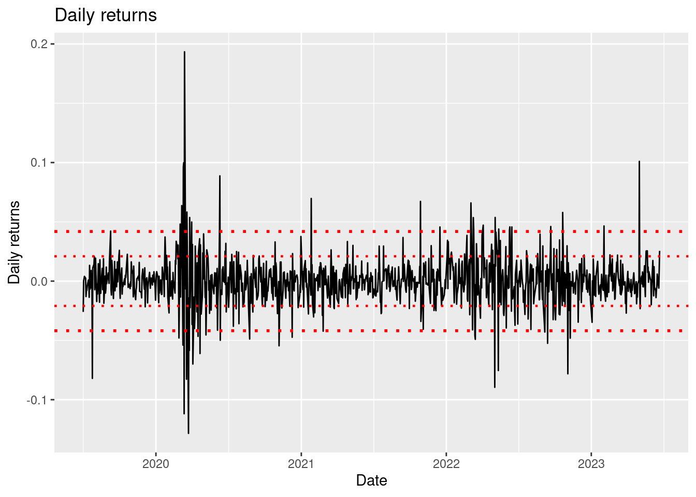

library(readr) # read_csv()
library(dplyr) # select(), filter(), mutate()
library(tidyr) #drop_na()
df <- read_csv('../../raw_data/SBUX.csv') |>
select(date, adjClose) |>
filter(date > '2019-10-01') |> drop_na() |>
mutate(ret = (adjClose - lag(adjClose)) / lag(adjClose))
r_bar = mean(df$ret, na.rm = T)
stdev = sd(df$ret, na.rm = T)
mu = r_bar / (1/252)
sigma = stdev / sqrt(1/252)One of the main pillar of quantitative finance is the assumption that assets’ returns behave in a random manner. Assets returns are normally distributed. It is a poor assumption as asset’s return are usually not normally distributed (fat tails, skewness, etc.), but it is one that is considered when approaching finance with a quantitative finance.
Discrete approach
\[R_i = \frac{S_{i+1}-S_i}{S_i} \tag{1}\] \[\bar{R} = \frac{\sum_{i=1}^{n} R_i}{n}\]
- \(R_i\) = return of an asset at time i
- \(S_i\) = price of an asset at time i
If returns are normally distributed, we could re-write Equation 1 as \[R_i = \frac{S_{i+1} - S_i}{S_i} = \bar{R} + Std \phi \tag{2}\]
- Std of returns (Std): \(\sqrt{\frac{1}{n-1} \sum_{i=1}^{n}(R_i - \bar{R})^2}\)
- \(\phi\) is just a number taken from the normal distribution with mean = 0 and std = 1
- \(\phi = \frac{1}{\sqrt{2 \pi}} \cdot e^{- \frac{x^2}{2}}\)
Continuous approach
Returns should scale with time.
Mean returns = \(\mu \cdot \delta t\)
- \(\mu\) = Annualized means returns on a continuous basis (usually not known, or hard to know)
- \(\delta t\) = a small time increment
\[R_i = \frac{S_{i+1} - S_i}{S_i} = \mu \delta t\] \[S_{i+1} - S_i= S_i \mu \delta t\] \[S_{i+1} = S_i \cdot (1 + \mu \delta t) \tag{3}\]
We could also rewrite Equation 3 so it depends of the initial (starting) price, instead of the previous price.
\(S_n = S_0 (1+\mu \delta t)^n\)
Using natural log:
\(S_n = S_0 e^{log (1+\mu \delta t)^n} = S_0 e^{n \cdot log{(1+\mu \delta t)}}\)
We could argue that \(log(1+\mu \delta t) = \mu \delta t\) as \(log(1+x) = x\) for small values of x.
\[S_n = S_0 \cdot e^{n \mu \delta t} \tag{4}\]
Now, \(n \cdot \delta t\) is the same as \(t\). Hence,
From earlier Equation 2, we can re-write it as: \(R_i = \bar{R} + Std \phi = \mu \delta t + \sigma \sqrt{\delta t} \phi\)
\[S_{i+1} - S_i= S_i \mu \delta t + S_i \sigma \sqrt{\delta t} \phi\]
- \(S_{i+1} - S_i = dS\)
- \(S_i = S(t)\)
- \(\delta t = dt\)
- \(\phi \sqrt{\delta t} = dX\) where \(dX\) is a random variable with mean = 0 and variance = dt. Hence \(E[dX] = 0\) and \(E[(dX)^2] = dt\)
Practice in R
Let’s use the previous note with a SBUX as a ticker.
The average daily return of SBUX over the last 3-ish year is -1.34^{-4} and using \(\bar{R} = \mu \delta t\) , or \(\mu = \frac{\bar{R}}{\delta t}\) and in our case \(\delta t = \frac{1}{252}\); hence annualized returns is -3.38 % with standard deviation of 33.868 % annualized.
We could plot the returns and the std of returns
library(ggplot2)
ggplot(df, aes(x = date, y = ret)) +
geom_line() +
geom_hline(yintercept = stdev, linetype = 'dotted', color = 'red', linewidth= 0.8) +
geom_hline(yintercept = -stdev, linetype = 'dotted', color = 'red', linewidth = 0.8) +
geom_hline(yintercept = 2*stdev, linetype = 'dotted', color = 'red', linewidth= 1) +
geom_hline(yintercept = -2*stdev, linetype = 'dotted', color = 'red', linewidth = 1) +
labs(title = 'Daily returns')Warning: Removed 1 row containing missing values (`geom_line()`).